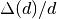

CalibrateRectangularDetectors dialog.
Table of Contents
| Name | Direction | Type | Default | Description |
|---|---|---|---|---|
| RunNumber | Input | list of str lists | Mandatory | Event file. Allowed extensions: [‘_event.nxs’, ‘.nxs.h5’] |
| Background | Input | int list | 0 | |
| XPixelSum | Input | number | 1 | Sum detector pixels in X direction. Must be a factor of X total pixels. Default is 1. |
| YPixelSum | Input | number | 1 | Sum detector pixels in Y direction. Must be a factor of Y total pixels. Default is 1. |
| SmoothSummedOffsets | Input | boolean | False | If the data was summed for calibration, smooth the resulting offsets workspace. |
| SmoothGroups | Input | string | Comma delimited number of points for smoothing pixels in each group. Default is no Smoothing. | |
| UnwrapRef | Input | number | 0 | Reference total flight path for frame unwrapping. Zero skips the correction |
| LowResRef | Input | number | 0 | Reference DIFC for resolution removal. Zero skips the correction |
| MaxOffset | Input | number | 1 | Maximum absolute value of offsets; default is 1 |
| CrossCorrelation | Input | boolean | True | CrossCorrelation if True; minimize using many peaks if False. |
| PeakPositions | Input | dbl list | Comma delimited d-space positions of reference peaks. Use 1-3 for Cross Correlation. Unlimited for many peaks option. | |
| PeakWindowMax | Input | number | 0 | Maximum window around a peak to search for it. Optional. |
| FitwindowTableWorkspace | Input | TableWorkspace | Name of input table workspace containing the fit window information for each spectrum. | |
| MinimumPeakHeight | Input | number | 2 | Minimum value allowed for peak height |
| MinimumPeakHeightObs | Input | number | 0 | Minimum value of a peak’s maximum observed Y value for this peak to be used to calculate offset. |
| DetectorResolutionWorkspace | Input | MatrixWorkspace | Name of optional input matrix workspace for each detector’s resolution (D(d)/d). | |
| AllowedResRange | Input | dbl list | 0.25,4 | Range of allowed individual peak’s resolution factor to input detector’s resolution. |
| PeakFunction | Input | string | Gaussian | Type of peak to fit. Used only with CrossCorrelation=False. Allowed values: [‘BackToBackExponential’, ‘Gaussian’, ‘Lorentzian’] |
| BackgroundType | Input | string | Flat | Used only with CrossCorrelation=False. Allowed values: [‘Flat’, ‘Linear’, ‘Quadratic’] |
| DetectorsPeaks | Input | int list | Comma delimited numbers of detector banks for each peak if using 2-3 peaks for Cross Correlation. Default is all. | |
| PeakHalfWidth | Input | number | 0.05 | Half width of d-space around peaks for Cross Correlation. Default is 0.05 |
| CrossCorrelationPoints | Input | number | 100 | Number of points to find peak from Cross Correlation. Default is 100 |
| Binning | Input | dbl list | 0,0,0 | Min, Step, and Max of d-space bins. Logarithmic binning is used if Step is negative. |
| DiffractionFocusWorkspace | Input | boolean | False | Diffraction focus by detectors. Default is False |
| GroupDetectorsBy | Input | string | All | Detector groups to use for future focussing: All detectors as one group, Groups (East,West for SNAP), Columns for SNAP, detector banks. Allowed values: [‘All’, ‘Group’, ‘Column’, ‘bank’] |
| FilterBadPulses | Input | boolean | True | Filter out events measured while proton charge is more than 5% below average |
| FilterByTimeMin | Input | number | 0 | Relative time to start filtering by in seconds. Applies only to sample. |
| FilterByTimeMax | Input | number | 0 | Relative time to stop filtering by in seconds. Applies only to sample. |
| SaveAs | Input | string | calibration | Allowed values: [‘dspacemap’, ‘calibration’, ‘dspacemap and calibration’] |
| OutputDirectory | Input | string | Mandatory | |
| OutputFilename | Output | string |
Here are examples of input and output from PG3 and SNAP:


The purpose of this algorithm is to calibrate the detector pixels and write a calibration file. The calibration file name contains the instrument, run number, and date of calibration. A binary Dspacemap file that converts from TOF to d-space including the calculated offsets is also an output option. For CrossCorrelation option: If one peak is not in the spectra of all the detectors, you can specify the first n detectors to be calibrated with one peak and the next n detectors to be calibrated with the second peak. If a color fill plot of the calibrated workspace does not look good, do a color fill plot of the workspace that ends in cc (cross correlation) to see if the CrossCorrelationPoints and/or PeakHalfWidth should be increased or decreased. Also plot the reference spectra from the cc workspace.
There are two exclusive approaches to define peak’s fit-window.
Optional input property DetectorResolutionWorkspace is a matrix workspace containing the detector resolution  for each spectrum. Combining with property AllowedResRange, it defines the lower and upper limit for accepted fitted peak width.
Let ![c_l = AllowedResRange[0]](../_images/math/e3fbaff04fca5b8205d614dde7e376c632bf9aa0.png) ,
, ![c_h = AllowedResRange[1]](../_images/math/a15efbd13d3735bc60948a7e0b1d5e1172c90efd.png) and
and  as the peak’s fitted width. Then,
as the peak’s fitted width. Then,

See also
Algorithm EstimateResolutionDiffraction v1
Categories: AlgorithmIndex | Diffraction\Calibration
Python: CalibrateRectangularDetectors.py (last modified: 2019-03-11)
{kind=link}